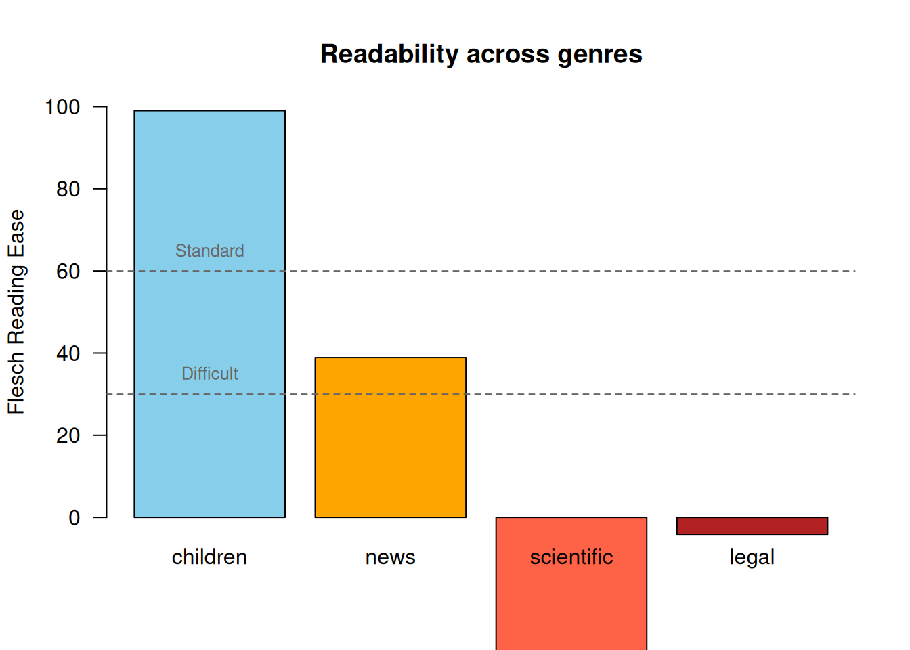

Last updated: 2026-02-12
Checks: 7 0
Knit directory: muse/
This reproducible R Markdown analysis was created with workflowr (version 1.7.1). The Checks tab describes the reproducibility checks that were applied when the results were created. The Past versions tab lists the development history.
Great! Since the R Markdown file has been committed to the Git repository, you know the exact version of the code that produced these results.
Great job! The global environment was empty. Objects defined in the global environment can affect the analysis in your R Markdown file in unknown ways. For reproduciblity it’s best to always run the code in an empty environment.
The command set.seed(20200712) was run prior to running
the code in the R Markdown file. Setting a seed ensures that any results
that rely on randomness, e.g. subsampling or permutations, are
reproducible.
Great job! Recording the operating system, R version, and package versions is critical for reproducibility.
Nice! There were no cached chunks for this analysis, so you can be confident that you successfully produced the results during this run.
Great job! Using relative paths to the files within your workflowr project makes it easier to run your code on other machines.
Great! You are using Git for version control. Tracking code development and connecting the code version to the results is critical for reproducibility.
The results in this page were generated with repository version 45e753c. See the Past versions tab to see a history of the changes made to the R Markdown and HTML files.
Note that you need to be careful to ensure that all relevant files for
the analysis have been committed to Git prior to generating the results
(you can use wflow_publish or
wflow_git_commit). workflowr only checks the R Markdown
file, but you know if there are other scripts or data files that it
depends on. Below is the status of the Git repository when the results
were generated:
Ignored files:
Ignored: .Rproj.user/
Ignored: data/1M_neurons_filtered_gene_bc_matrices_h5.h5
Ignored: data/293t/
Ignored: data/293t_3t3_filtered_gene_bc_matrices.tar.gz
Ignored: data/293t_filtered_gene_bc_matrices.tar.gz
Ignored: data/5k_Human_Donor1_PBMC_3p_gem-x_5k_Human_Donor1_PBMC_3p_gem-x_count_sample_filtered_feature_bc_matrix.h5
Ignored: data/5k_Human_Donor2_PBMC_3p_gem-x_5k_Human_Donor2_PBMC_3p_gem-x_count_sample_filtered_feature_bc_matrix.h5
Ignored: data/5k_Human_Donor3_PBMC_3p_gem-x_5k_Human_Donor3_PBMC_3p_gem-x_count_sample_filtered_feature_bc_matrix.h5
Ignored: data/5k_Human_Donor4_PBMC_3p_gem-x_5k_Human_Donor4_PBMC_3p_gem-x_count_sample_filtered_feature_bc_matrix.h5
Ignored: data/97516b79-8d08-46a6-b329-5d0a25b0be98.h5ad
Ignored: data/Parent_SC3v3_Human_Glioblastoma_filtered_feature_bc_matrix.tar.gz
Ignored: data/brain_counts/
Ignored: data/cl.obo
Ignored: data/cl.owl
Ignored: data/jurkat/
Ignored: data/jurkat:293t_50:50_filtered_gene_bc_matrices.tar.gz
Ignored: data/jurkat_293t/
Ignored: data/jurkat_filtered_gene_bc_matrices.tar.gz
Ignored: data/pbmc20k/
Ignored: data/pbmc20k_seurat/
Ignored: data/pbmc3k.csv
Ignored: data/pbmc3k.csv.gz
Ignored: data/pbmc3k.h5ad
Ignored: data/pbmc3k/
Ignored: data/pbmc3k_bpcells_mat/
Ignored: data/pbmc3k_export.mtx
Ignored: data/pbmc3k_matrix.mtx
Ignored: data/pbmc3k_seurat.rds
Ignored: data/pbmc4k_filtered_gene_bc_matrices.tar.gz
Ignored: data/pbmc_1k_v3_filtered_feature_bc_matrix.h5
Ignored: data/pbmc_1k_v3_raw_feature_bc_matrix.h5
Ignored: data/refdata-gex-GRCh38-2020-A.tar.gz
Ignored: data/seurat_1m_neuron.rds
Ignored: data/t_3k_filtered_gene_bc_matrices.tar.gz
Ignored: r_packages_4.4.1/
Ignored: r_packages_4.5.0/
Untracked files:
Untracked: .claude/
Untracked: CLAUDE.md
Untracked: analysis/.claude/
Untracked: analysis/bioc.Rmd
Untracked: analysis/bioc_scrnaseq.Rmd
Untracked: analysis/chick_weight.Rmd
Untracked: analysis/likelihood.Rmd
Untracked: analysis/modelling.Rmd
Untracked: bpcells_matrix/
Untracked: data/Caenorhabditis_elegans.WBcel235.113.gtf.gz
Untracked: data/GCF_043380555.1-RS_2024_12_gene_ontology.gaf.gz
Untracked: data/SeuratObj.rds
Untracked: data/arab.rds
Untracked: data/astronomicalunit.csv
Untracked: data/femaleMiceWeights.csv
Untracked: data/lung_bcell.rds
Untracked: m3/
Untracked: women.json
Unstaged changes:
Modified: analysis/isoform_switch_analyzer.Rmd
Modified: analysis/linear_models.Rmd
Note that any generated files, e.g. HTML, png, CSS, etc., are not included in this status report because it is ok for generated content to have uncommitted changes.
These are the previous versions of the repository in which changes were
made to the R Markdown (analysis/readability.Rmd) and HTML
(docs/readability.html) files. If you’ve configured a
remote Git repository (see ?wflow_git_remote), click on the
hyperlinks in the table below to view the files as they were in that
past version.
| File | Version | Author | Date | Message |
|---|---|---|---|---|
| Rmd | 45e753c | Dave Tang | 2026-02-12 | Readability metrics |
Readability refers to how easy a piece of text is to read and understand. Readability formulas estimate reading difficulty based on surface-level features such as word length, sentence length, and syllable count. These measures are widely used in education, publishing, and health communication to match text complexity to the intended audience.
The quanteda.textstats
package provides textstat_readability(), which calculates a
wide range of readability indices. It is part of the quanteda ecosystem for quantitative text
analysis in R.
install.packages(c("quanteda", "quanteda.textstats"))library(quanteda)Package version: 4.3.0
Unicode version: 15.1
ICU version: 74.2Parallel computing: disabledSee https://quanteda.io for tutorials and examples.library(quanteda.textstats)
packageVersion("quanteda.textstats")[1] '0.97.2'The textstat_readability() function works on a quanteda
corpus object. We can create a corpus from a character
vector.
texts <- c(
simple = "The cat sat on the mat. It was a good cat.",
medium = "The researcher examined the relationship between variables using a standard regression model.",
hard = "The epistemological ramifications of hermeneutic phenomenology necessitate a reconceptualisation of methodological presuppositions underlying contemporary empirical investigations."
)
corp <- corpus(texts)By default, textstat_readability() returns the Flesch
Reading Ease score.
textstat_readability(corp) document Flesch
1 simple 116.6525
2 medium -2.7450
3 hard -158.3800The Flesch Reading Ease score ranges roughly from 0 to 100, where higher scores indicate easier text. As a rough guide:
| Score | Difficulty | Audience |
|---|---|---|
| 90–100 | Very easy | 5th grader |
| 60–70 | Standard | 8th–9th grader |
| 30–50 | Difficult | College student |
| 0–30 | Very difficult | University graduate |
The measure argument accepts a character vector of
readability index names. Use "all" to compute every
available measure.
all_measures <- textstat_readability(corp, measure = "all")
ncol(all_measures) - 1[1] 48names(all_measures)[-1] [1] "ARI" "ARI.simple" "ARI.NRI"
[4] "Bormuth.MC" "Bormuth.GP" "Coleman"
[7] "Coleman.C2" "Coleman.Liau.ECP" "Coleman.Liau.grade"
[10] "Coleman.Liau.short" "Dale.Chall" "Dale.Chall.old"
[13] "Dale.Chall.PSK" "Danielson.Bryan" "Danielson.Bryan.2"
[16] "Dickes.Steiwer" "DRP" "ELF"
[19] "Farr.Jenkins.Paterson" "Flesch" "Flesch.PSK"
[22] "Flesch.Kincaid" "FOG" "FOG.PSK"
[25] "FOG.NRI" "FORCAST" "FORCAST.RGL"
[28] "Fucks" "Linsear.Write" "LIW"
[31] "nWS" "nWS.2" "nWS.3"
[34] "nWS.4" "RIX" "Scrabble"
[37] "SMOG" "SMOG.C" "SMOG.simple"
[40] "SMOG.de" "Spache" "Spache.old"
[43] "Strain" "Traenkle.Bailer" "Traenkle.Bailer.2"
[46] "Wheeler.Smith" "meanSentenceLength" "meanWordSyllables" Some commonly used indices include:
common <- c("Flesch", "Flesch.Kincaid", "FOG", "Coleman.Liau", "ARI")
textstat_readability(corp, measure = common) document Flesch Flesch.Kincaid FOG Coleman.Liau.ECP ARI
1 simple 116.6525 -1.64500 2.20000 102.948500 -5.834545
2 medium -2.7450 16.62333 21.46667 5.990283 16.362500
3 hard -158.3800 39.32500 36.40000 -71.365825 34.847500All the grade-level measures (Flesch-Kincaid, FOG, Coleman-Liau, ARI) roughly agree that the “hard” text requires a post-graduate reading level, while the “simple” text is accessible at an elementary level.
A more realistic example: comparing readability across different genres. Below we use opening passages from well-known texts.
passages <- c(
children = "Once upon a time there was a little girl. She lived in a small house near the woods. Every day she went to play with her friends. They liked to run and jump and laugh together.",
news = "The central bank raised interest rates by a quarter of a percentage point on Wednesday, signalling that further increases may be necessary to bring inflation back to its two percent target.",
scientific = "Transcriptomic profiling of single cells revealed substantial heterogeneity in gene expression patterns across phenotypically indistinguishable subpopulations, suggesting that stochastic fluctuations in transcriptional regulatory networks contribute to functional diversification.",
legal = "Notwithstanding any provision of this agreement to the contrary, the indemnifying party shall not be liable for any consequential, incidental, or punitive damages arising out of or relating to any breach of the representations and warranties set forth herein."
)
corp_genre <- corpus(passages)
genre_scores <- textstat_readability(
corp_genre,
measure = c("Flesch", "Flesch.Kincaid", "FOG", "ARI")
)
genre_scores document Flesch Flesch.Kincaid FOG ARI
1 children 99.000000 1.686667 5.822222 0.9941667
2 news 38.918387 15.532258 20.141935 17.9238710
3 scientific -78.406429 31.151429 34.057143 34.7917857
4 legal -4.119231 23.522564 29.958974 24.2769231Visualise the Flesch Reading Ease scores.
barplot(
genre_scores$Flesch,
names.arg = genre_scores$document,
col = c("skyblue", "orange", "tomato", "firebrick"),
ylab = "Flesch Reading Ease",
main = "Readability across genres",
ylim = c(0, 100),
las = 1
)
abline(h = c(30, 60), lty = 2, col = "grey40")
text(x = 0.7, y = 65, labels = "Standard", col = "grey40", cex = 0.8)
text(x = 0.7, y = 35, labels = "Difficult", col = "grey40", cex = 0.8)
By default, textstat_readability() treats each document
as a unit. To get readability at the sentence level, first reshape the
corpus into sentences using corpus_reshape().
para <- "The quick brown fox jumps over the lazy dog. Pseudopseudohypoparathyroidism is a very long word that is difficult to pronounce. Go."
corp_para <- corpus(para)
corp_sentences <- corpus_reshape(corp_para, to = "sentences")
as.character(corp_sentences) text1.1
"The quick brown fox jumps over the lazy dog."
text1.2
"Pseudopseudohypoparathyroidism is a very long word that is difficult to pronounce."
text1.3
"Go." textstat_readability(corp_sentences) document Flesch
1 text1.1 94.300000
2 text1.2 3.397273
3 text1.3 121.220000This is useful for identifying specific sentences that are hard to read within a longer document.
A common workflow is to identify difficult sentences and revise them. Suppose we have a draft paragraph.
draft <- c(
"We developed a novel methodology for the characterisation of transcriptomic heterogeneity in single-cell populations.",
"The cells were sorted using flow cytometry.",
"Our results demonstrate that the implementation of dimensionality reduction techniques facilitates the identification of previously unrecognised cellular subtypes.",
"We found three new cell types."
)
corp_draft <- corpus(draft)
scores <- textstat_readability(corp_draft, measure = c("Flesch", "Flesch.Kincaid"))
scores document Flesch Flesch.Kincaid
1 text1 -33.99000 21.726667
2 text2 54.70143 7.368571
3 text3 -60.53500 26.174444
4 text4 116.14500 -1.450000scores$flag <- ifelse(scores$Flesch < 30, "revise", "ok")
scores[, c("document", "Flesch", "Flesch.Kincaid", "flag")] document Flesch Flesch.Kincaid flag
1 text1 -33.99000 21.726667 revise
2 text2 54.70143 7.368571 ok
3 text3 -60.53500 26.174444 revise
4 text4 116.14500 -1.450000 okSentences flagged for revision tend to have long words and complex structure. Shortening sentences and replacing jargon with simpler terms will improve the score.
Different readability formulas use different features. For example, Flesch and Flesch-Kincaid rely on syllable counts, while Coleman-Liau uses character counts and ARI uses character and word counts. These can sometimes disagree.
tricky <- c(
short_words = "I do not see how we can go on to do the work we set out to do if we do not get the aid we so need.",
long_words = "Characterisation. Compartmentalisation. Telecommunications. Internationalisation."
)
corp_tricky <- corpus(tricky)
textstat_readability(corp_tricky, measure = c("Flesch", "Coleman.Liau", "ARI")) document Flesch Coleman.Liau.ECP ARI
1 short_words 93.815 92.04907 4.345
2 long_words -386.380 -147.17020 66.205The text with many short words scores as very easy on Flesch (which counts syllables) but may score differently on character-based measures. The text with only long words is penalised heavily across all measures, despite not being a real “hard to understand” text – it is just a list of words. This illustrates a key limitation: readability formulas measure surface-level features, not comprehension difficulty.
Readability formulas are useful approximations but have well-known limitations:
Despite these caveats, readability measures remain a practical tool for flagging text that is likely too complex for its intended audience.
sessionInfo()R version 4.5.0 (2025-04-11)
Platform: x86_64-pc-linux-gnu
Running under: Ubuntu 24.04.3 LTS
Matrix products: default
BLAS: /usr/lib/x86_64-linux-gnu/openblas-pthread/libblas.so.3
LAPACK: /usr/lib/x86_64-linux-gnu/openblas-pthread/libopenblasp-r0.3.26.so; LAPACK version 3.12.0
locale:
[1] LC_CTYPE=en_US.UTF-8 LC_NUMERIC=C
[3] LC_TIME=en_US.UTF-8 LC_COLLATE=en_US.UTF-8
[5] LC_MONETARY=en_US.UTF-8 LC_MESSAGES=en_US.UTF-8
[7] LC_PAPER=en_US.UTF-8 LC_NAME=C
[9] LC_ADDRESS=C LC_TELEPHONE=C
[11] LC_MEASUREMENT=en_US.UTF-8 LC_IDENTIFICATION=C
time zone: Etc/UTC
tzcode source: system (glibc)
attached base packages:
[1] stats graphics grDevices utils datasets methods base
other attached packages:
[1] quanteda.textstats_0.97.2 quanteda_4.3.0
[3] workflowr_1.7.1
loaded via a namespace (and not attached):
[1] Matrix_1.7-3 jsonlite_2.0.0 compiler_4.5.0 stopwords_2.3
[5] promises_1.3.3 Rcpp_1.0.14 stringr_1.5.1 git2r_0.36.2
[9] nsyllable_1.0.1 callr_3.7.6 later_1.4.2 jquerylib_0.1.4
[13] yaml_2.3.10 fastmap_1.2.0 lattice_0.22-6 R6_2.6.1
[17] knitr_1.50 tibble_3.3.0 rprojroot_2.0.4 bslib_0.9.0
[21] pillar_1.10.2 rlang_1.1.6 fastmatch_1.1-6 cachem_1.1.0
[25] stringi_1.8.7 httpuv_1.6.16 xfun_0.52 getPass_0.2-4
[29] fs_1.6.6 sass_0.4.10 cli_3.6.5 magrittr_2.0.3
[33] ps_1.9.1 digest_0.6.37 grid_4.5.0 processx_3.8.6
[37] rstudioapi_0.17.1 lifecycle_1.0.4 vctrs_0.6.5 evaluate_1.0.3
[41] glue_1.8.0 whisker_0.4.1 rmarkdown_2.29 httr_1.4.7
[45] tools_4.5.0 pkgconfig_2.0.3 htmltools_0.5.8.1